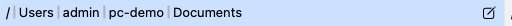

이리저리 이동하기
Peach Commander는 두 폴더를 나란히 표시하므로, 대부분의 시간은 한 패널을 폴더에서 폴더로 옮기는 데 씁니다. 폴더를 열고, 계층 구조에서 위로 올라가고, 지나온 곳을 되짚고, 경로를 직접 입력하고, 홈, 데스크탑, 다운로드 같은 일상적인 장소로 바로 이동할 수 있습니다. 모든 동작은 활성 패널, 즉 경로 막대가 강조된 패널에 작용합니다.
폴더 열기 및 위로 올라가기
- 폴더가 강조될 때까지 화살표 키로 선택 막대를 이동합니다.
- Enter를 눌러(또는 두 번 클릭하여) 엽니다. 이는 압축 파일에 들어가기도 하고 파일을 기본 앱으로 열기도 합니다.
- 상위 폴더로 한 단계 위로 가려면 Ctrl+PageUp(또는 Backspace)을 누릅니다.
- 현재 드라이브의 맨 위로 이동하려면 이동 ▸ Root를 선택합니다.
뒤로 및 앞으로 가기
Peach Commander는 웹 브라우저처럼 각 패널에서 방문한 폴더를 기억합니다.
- 이전 폴더로 돌아가려면 Alt+Left를, 다시 앞으로 가려면 Alt+Right를 누릅니다.
- Alt+Down을 누르면 최근 폴더의 드롭다운 목록이 열리고 그중 어느 것으로든 이동할 수 있습니다.
경로 입력 또는 경로 막대 사용
각 패널 상단을 가로지르는 경로 막대는 현재 위치를 보여주며 어딘가로 빠르게 가는 방법으로도 쓰입니다.

(그림: 경로 막대. 세그먼트를 클릭하면 그 폴더로 이동하고, 연필을 클릭하면 전체 경로를 입력합니다.)- 경로의 임의의 세그먼트(예: 상위 폴더 이름)를 클릭하면 바로 이동합니다.
- 경로 막대 오른쪽의 연필을 클릭하면 텍스트 필드로 바뀌고, 임의의 경로를 입력하거나 붙여 넣고 Enter를 누릅니다.
- 또는 파일 ▸ Go to Folder…(Cmd+Shift+G)를 선택하여 어디서든 경로를 입력합니다.
공통 장소로 이동
이동 메뉴는 활성 패널을 가장 많이 사용하는 폴더로 데려갑니다.
- 홈, 데스크탑, 다운로드, 휴지통, iCloud Drive.
- iCloud Drive는 Mac에 설정되어 있을 때 나타납니다.
패널 및 드라이브 전환
- Tab을 눌러 왼쪽과 오른쪽 패널 사이로 포커스를 이동합니다.
- 각 패널 위의 드라이브 막대는 마운트된 볼륨을 여유 공간과 함께 나열합니다. 볼륨을 클릭하면 해당 패널이 그것으로 전환됩니다.
- Ctrl+U를 눌러 두 패널을 맞바꿉니다(폴더가 좌우로 바뀝니다). Ctrl+Shift+U는 탭과 함께 맞바꿉니다.
- Ctrl+=를 눌러 다른 패널을 활성 패널과 같은 폴더로 맞춥니다(대상 = 원본). 복사나 이동 직전에 편리합니다.
- 이동 ▸ 왼쪽 = 오른쪽과 이동 ▸ 오른쪽 = 왼쪽은 같은 일을 하지만 어느 쪽인지 분명히 밝힙니다. 앞의 것은 오른쪽 패널의 폴더를 왼쪽에 보여 주고, 뒤의 것은 왼쪽 패널의 폴더를 오른쪽에 보여 줍니다. 대상 = 원본과 달리 어느 패널이 활성인지에 좌우되지 않으므로, 버튼 막대에 있는 두 버튼은 언제나 같은 뜻입니다.
단축키
| 작업 | 단축키 |
|---|---|
| 커서 아래의 폴더/파일 열기 | Enter |
| 상위 폴더로 이동 | Ctrl+PageUp (또는 Backspace) |
| 기록에서 뒤로 / 앞으로 | Alt+Left / Alt+Right |
| 기록 드롭다운 | Alt+Down |
| 폴더로 이동…(경로 입력) | Cmd+Shift+G |
| 홈 | Cmd+Shift+H |
| 데스크탑 | Cmd+Shift+D |
| 다운로드 | Option+Cmd+L |
| 활성 패널 전환 | Tab |
| 전체 기록(모든 패널) | Ctrl+Cmd+H |
팁
- 패널은 스스로 최신 상태를 유지합니다. 다른 프로그램이 지금 보고 있는 폴더에서 파일을 만들거나 바꾸거나 지우면 저절로 반영되며, 커서와 표시는 그대로 남습니다. 무언가가 계속 쓰는 폴더가 끊임없이 새로 고쳐진다면 설정 ▸ 옵션 ▸ 표시에서 끄십시오.
- 각 패널은 고유한 기록을 유지하므로, 뒤로와 앞으로는 활성 쪽에만 영향을 줍니다.
- 입력한 경로가 유효한 폴더가 아니면, 경로 막대는 이동하지 않고 조용히 마지막 위치를 유지합니다.
- 이동 메뉴의 휴지통과 iCloud Drive에는 기본 단축키가 없지만, 설정 ▸ Options ▸ Keyboard에서 하나를 지정할 수 있습니다.